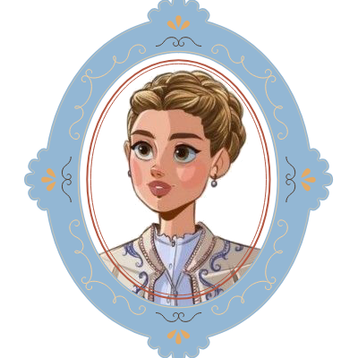

Amy March
Step into the charming world of Amy March, the artist sister from Louisa May Alcott’s beloved Little Women. Here, we invite you to explore your creativity and unwind with our collection of 10 drawings inspired by Amy’s vibrant personality and passion for art. Whether you’re a seasoned painter or just looking for a relaxing way to express yourself, our downloadable and printable designs are perfect for everyone. Grab your paints and brushes, and let the warmth and whimsy of Amy’s world inspire your own masterpiece. Dive in, relax, and embrace your inner artist!
×